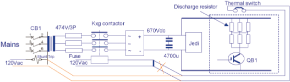
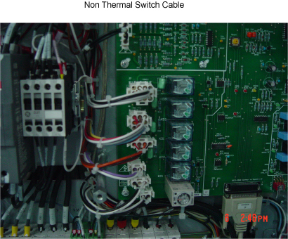
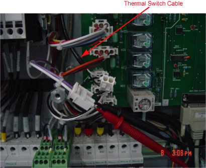
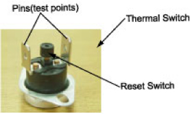
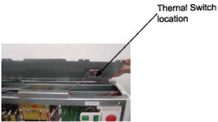
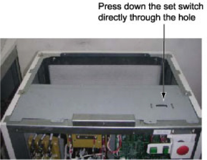
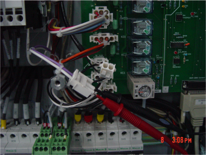

Operating Documentation
Direction 5181178-800, Rev# 16
BrightSpeed Select Service Methods Gen
Module Version 1.1, Version Date 11/18/10
Operating Documentation |
| Last Revised | November 18, 2010 |
Starting from September 7th, 2005, forward production for NGPDU has started to implement overheat protection circuit to protect possible burning of the discharge resistors. The first unit that has this protection circuit for NGPDU-4 is E4YP05408, for NGPDU-3 is E4RP051167. FMI is scheduled to implement this protection circuit for IB too.
If the QB1 on the NGPDU control board (2334820-2) have short circuit, the discharge resistors will overheat and the protection thermal switch will be opened and cut off the HV DC, then following phenomenon may occurred during scan: System cannot go to next step after clicking Confirm during scan, but return to Resume state. Message is prompted: “Scanner Hardware stopped scan.” Start Scan on the keyboard keeps lighting.
Intended to prevent Discharge Resistor Overheating, add additional cable to place the thermal switch in series with CB1 shunt trip (central breaker of main power), this will trip the main power off to NGPDU when control board or Kxg contactor happens.
Refer to below schematic diagrams that show differences of old/new overheating protection loop.

| ||||
| Electrocution hazard | ||||
| High Voltages present. | ||||
| Use proper lockout/tagout procedures before Servicing PDU. |
Shut down the system, power off NGPDU. Cut off the power from power distribution box and use proper Lockout/Tagout procedures.
Check Thermal Switch Cable whether on PDU, refer below Illustration:


NGPDU Overheating Problem Troubleshooting divided below two solutions:
(For Non Thermal Switch Cable on PDU)
Use the DVM to test the two pins of Thermal Switch. If they’re open, it indicates that the QB1 on the control board has been short-circuited. Refer to Illustration 1
Illustration 1: Thermal Switch

Replace Control Board of NGPDU.
Press down the reset switch on the thermal switch. Use the DVM to test the two pins of the thermal switch to make sure it’s closed. Refer to Illustration 2 and Illustration 3
Illustration 2: Thermal Switch Location

Illustration 3: Sheet Metal

(For With Thermal Switch Cable on PDU)
Use the DVM to test the two pins of Thermal Switch. If they’re open, further check as below:
Check whether QB1 IGBT on the control board is short circuit. If yes, replace control board.
Check whether Kxg contactor sticks at the closed status. If yes, replace Kxg contactor.
Use the DVM to test Transformer Temperature Switch. If it's open, replace whole PDU.
